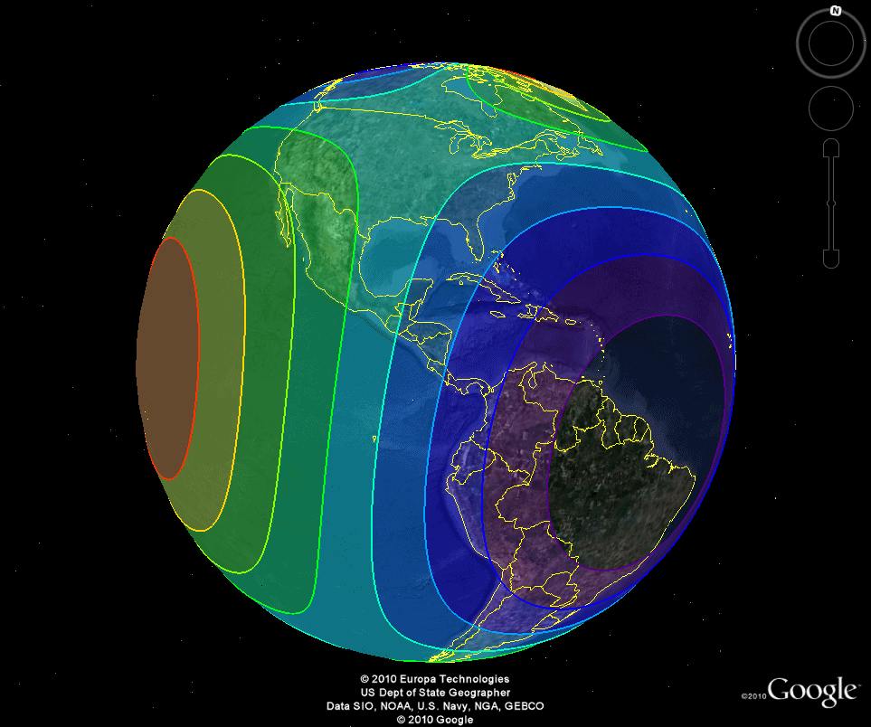

IDL 8.1 expands support for geospatial data visualization by supporting new file formats and allowing you to create high-quality video animations and high-resolution maps.
New graphics and image analysis upgrades simplify scientific visualization tasks and make it easier to learn the IDL language.
Note: If you are new to IDL or upgrading from an older version, see also: What's New in IDL 8.0
The IDLffVideoWrite class allows you to write images to a video file, with an optional soundtrack. You can create .avi or .mp4 video files with the IDLffVideoWrite class. By default, video streams in .mp4 files use the MPEG-4 codec, and audio streams in .mp4 files use the AAC codec.
In IDL 8.1, you can specify your own graphics event handlers for keyboard, mouse, and selection events in a graphic or widget_window. See the following topics for more information:
You can now programatically delete graphics.
The graphics GetData and SetData methods allow you to programatically get and set data in an IDL graphic after creation.
The Show method for WINDOW moves the specified window to the front.
The HitTest method for WINDOW returns the graphics elements at a specific location or within a defined box.
The GetValueAtLocation method allows you to retrieve data from a graphic given the x , y location.
The graphics [XYZ]STYLE properties automatically extend axis ranges for plot graphics.
The THICK property for all IDLgr* objects and the [XYZ]THICK properties for graphics were changed to accept values between 0 and 10. A thickness of 0 displays a thin hairline on the chosen device. The default value is 1.
For graphics plots, the crosshair feature automatically snaps the mouse pointer to the nearest plot data point.
You can save IDL graphics images as multipage PDFs by calling the graphic's Save method with a .pdf file extension and the APPEND keyword. The APPEND keyword keeps the file open after writing out the graphic data. The next call to the Save method appends the new graphic data onto the same file. When calling the Save method the final time, specify both /APPEND and /CLOSE.
This example shows how to create a multi-page PDF file with the APPEND keyword.
When using the TEXT function to add a text annotation to an IDL graphic, you can enter multibyte characters through the Windows Input Method Manager (IMM) on Chinese, Japanese, and Korean localized Windows operating systems when an Asian language pack is installed. See Internationalizing Code for more information.
For graphics, the MapForward and MapInverse methods transform map coordinates from longitude and latitude to Cartesian (x, y) coordinates, using the map projection associated with the graphic.
You can draw high-resolution US and continental coastlines with the MAPCONTINENTS function's HIRES property. The following example draws California's Monterey Bay in both low and high resolution.
The MAPCONTINENTS COUNTRIES property uses an updated world country boundaries shapefile.
You can draw points on maps using symbols with the SYMBOL function, as shown below.

Content Assist now provides a list of the map projections as well as a specialized list of keywords based on allowed properties for each projection.
IDL now includes routines for reading and writing GRIdded Binary (GRIB) 1 and GRIB 2 files.
You can import IDL graphic polylines, polygons, contour lines, and images into Google Maps™ mapping service or Google Earth™ mapping service formats by saving them as Keyhole Markup Language (KML) or KMZ files (ZIP files containing KML and image files).
To generate the following image, we created a map of the world using the Mollweide projection, and overplotted that map with two 3-D contour plots (one that displays filled contour levels with different colors, and one that just shows the contour boundaries). We then called the CONTOUR function's SAVE method to create a KML file and load the file into Google Earth™ mapping service. You can read about the full example here .

You can now embed the following source control tools in the IDL Workbench:
See IDL Features to Help You Develop Code for more information.
The GAUSS_SMOOTH function smoothes data using a Gaussian kernel. Also known as a Gaussian blur, it is typically used to reduce noise and detail in an image.
The EDGE_MIRROR keyword for CONVOL and SMOOTH and the new EDGE_WRAP keyword for SMOOTH apply the smoothing function to all points. If the neighborhood around a point includes a point outside the array, a "mirrored" or "wrapped" edge point is used to compute the smoothed result.
The GAUSSIAN_FUNCTION function creates a Gaussian kernel used in convolution.
The CONVOL_FFT function computes the convolution of an image using a product of Fourier transforms for speed.
The ToArray and ToStruct methods move elements from a list or hash to an array or structure.
A NO_COPY keyword was added to the ToArray and ToStruct methods for LIST and HASH. Set this keyword to move each element from the list or hash to the output array or structure. When finished, the original list or hash will be empty.
IDL now allows nested indexing into arrays within a list or hash.
The IsEmpty method checks whether lists and hashes are empty.
The Count method returns the number of elements in the list or hash.
For hashes, the FindValue method returns a list of all keys that contain a certain value. For lists, the FindValue method returns an array of indices for those list elements that are equal to a certain value.
Setting the NUMBER keyword to ISA causes the function to return TRUE if Variable is a numeric type, and FALSE otherwise.
IDL provides the following internationalization routines that convert strings from one encoding to another:
The following topics are available outside of this help system in PDF format. The files are located in your IDL installation's
help/pdf
directory:
advmathstats.pdf
bridges.pdf
dataminer.pdf
edg.pdf
image.pdf
itooldevguide.pdf
itooluserguide.pdf
using.pdf
MAKE_RT's keywords GRIB , HIRES_SHAPEFILES , and VIDEO support new features added to IDL 8.1.
If you are new to IDL or upgrading from an older version, see also: What's New in IDL 8.0